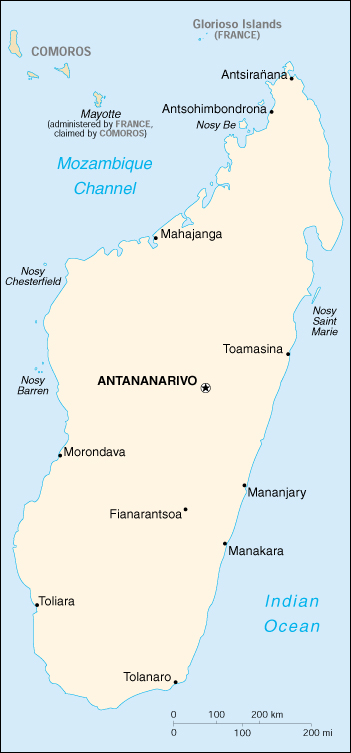

|
Madagascar | |
| Introduction Geography People Government Economy Communications Transportation Military Transnational Issues | ||
|  | ||
| Madagascar | Introduction | Top of Page |
| Background: | Formerly an independent kingdom, Madagascar became a French colony in 1886, but regained its independence in 1960. During 1992-93, free presidential and National Assembly elections were held, ending 17 years of single-party rule. In 1997 in the second presidential race, Didier RATSIRAKA, the leader during the 1970s and 1980s, was returned to the presidency. |
| Madagascar | Geography | Top of Page |
| Location: | Southern Africa, island in the Indian Ocean, east of Mozambique |
| Geographic coordinates: | 20 00 S, 47 00 E |
| Map references: | Africa |
| Area: |
total:
587,040 sq km
land: 581,540 sq km water: 5,500 sq km |
| Area - comparative: | slightly less than twice the size of Arizona |
| Land boundaries: | 0 km |
| Coastline: | 4,828 km |
| Maritime claims: |
contiguous zone:
24 NM
continental shelf: 200 NM or 100 NM from the 2,500-m deep isobath exclusive economic zone: 200 NM territorial sea: 12 NM |
| Climate: | tropical along coast, temperate inland, arid in south |
| Terrain: | narrow coastal plain, high plateau and mountains in center |
| Elevation extremes: |
lowest point:
Indian Ocean 0 m
highest point: Maromokotro 2,876 m |
| Natural resources: | graphite, chromite, coal, bauxite, salt, quartz, tar sands, semiprecious stones, mica, fish, hydropower |
| Land use: |
arable land:
4%
permanent crops: 1% permanent pastures: 41% forests and woodland: 40% other: 14% (1993 est.) |
| Irrigated land: | 10,870 sq km (1993 est.) |
| Natural hazards: | periodic cyclones |
| Environment - current issues: | soil erosion results from deforestation and overgrazing; desertification; surface water contaminated with raw sewage and other organic wastes; several species of flora and fauna unique to the island are endangered |
| Environment - international agreements: |
party to:
Biodiversity, Climate Change, Desertification, Endangered Species, Hazardous Wastes, Marine Life Conservation, Nuclear Test Ban, Ozone Layer Protection, Wetlands
signed, but not ratified: Law of the Sea |
| Geography - note: | world's fourth-largest island; strategic location along Mozambique Channel |
| Madagascar | People | Top of Page |
| Population: | 15,982,563 (July 2001 est.) |
| Age structure: |
0-14 years:
45.02% (male 3,607,803; female 3,587,532)
15-64 years: 51.77% (male 4,093,720; female 4,180,430) 65 years and over: 3.21% (male 239,839; female 273,239) (2001 est.) |
| Population growth rate: | 3.02% (2001 est.) |
| Birth rate: | 42.66 births/1,000 population (2001 est.) |
| Death rate: | 12.42 deaths/1,000 population (2001 est.) |
| Net migration rate: | 0 migrant(s)/1,000 population (2001 est.) |
| Sex ratio: |
at birth:
1.03 male(s)/female
under 15 years: 1.01 male(s)/female 15-64 years: 0.98 male(s)/female 65 years and over: 0.88 male(s)/female total population: 0.99 male(s)/female (2001 est.) |
| Infant mortality rate: | 83.58 deaths/1,000 live births (2001 est.) |
| Life expectancy at birth: |
total population:
55.35 years
male: 53.08 years female: 57.68 years (2001 est.) |
| Total fertility rate: | 5.8 children born/woman (2001 est.) |
| HIV/AIDS - adult prevalence rate: | 0.15% (1999 est.) |
| HIV/AIDS - people living with HIV/AIDS: | 11,000 (1999 est.) |
| HIV/AIDS - deaths: | 870 (1999 est.) |
| Nationality: |
noun:
Malagasy (singular and plural)
adjective: Malagasy |
| Ethnic groups: | Malayo-Indonesian (Merina and related Betsileo), Cotiers (mixed African, Malayo-Indonesian, and Arab ancestry - Betsimisaraka, Tsimihety, Antaisaka, Sakalava), French, Indian, Creole, Comoran |
| Religions: | indigenous beliefs 52%, Christian 41%, Muslim 7% |
| Languages: | French (official), Malagasy (official) |
| Literacy: |
definition:
age 15 and over can read and write
total population: 80% male: 88% female: 73% (1990 est.) |
| Madagascar | Government | Top of Page |
| Country name: |
conventional long form:
Republic of Madagascar
conventional short form: Madagascar local long form: Republique de Madagascar local short form: Madagascar former: Malagasy Republic |
| Government type: | republic |
| Capital: | Antananarivo |
| Administrative divisions: | 6 provinces (faritany); Antananarivo, Antsiranana, Fianarantsoa, Mahajanga, Toamasina, Toliara |
| Independence: | 26 June 1960 (from France) |
| National holiday: | Independence Day, 26 June (1960) |
| Constitution: | 19 August 1992 by national referendum |
| Legal system: | based on French civil law system and traditional Malagasy law; has not accepted compulsory ICJ jurisdiction |
| Suffrage: | 18 years of age; universal |
| Executive branch: |
chief of state:
President Didier RATSIRAKA (since 10 February 1997)
head of government: Prime Minister Tantely Rene Gabriot ANDRIANARIVO (since NA 1998) cabinet: Council of Ministers appointed by the prime minister elections: president elected by popular vote for a five-year term; election last held 29 December 1996 (next to be held NA November 2001); prime minister appointed by the president from a list of candidates nominated by the National Assembly election results: Didier RATSIRAKA elected president; percent of vote - Didier RATSIRAKA (AREMA) 50.7%, Albert ZAFY (AFFA) 49.3% |
| Legislative branch: |
unicameral National Assembly or Assemblee Nationale (150 seats; members are directly elected by popular vote to serve four-year terms); note - the legislature is scheduled to become a bicameral Parliament with the establishment of a Senate; two-thirds of the seats of this Senate will be filled by regional assemblies whose members will be elected by popular vote; the remaining one-third of the seats will be appointed by the president; the total number of seats will be determined by the National Assembly; all members will serve four-year terms
elections: National Assembly - last held 17 May 1998 (next to be held NA 2002) election results: National Assembly - percent of vote by party - NA%; seats by party - AREMA 63, LEADER/Fanilo 16, AVI 14, RPSD 11, AFFA 6, MFM 3, AKFM/Fanavaozana 3, GRAD/Iloafo 1, Fihaonana 1, independents 32 |
| Judicial branch: | Supreme Court or Cour Supreme; High Constitutional Court or Haute Cour Constitutionnelle |
| Political parties and leaders: | Action, Truth, Development, and Harmony or AFFA [Professor Albert ZAFY]; Association for the Rebirth of Madagascar or AREMA [leader vacant]; Congress Party for Malagasy Independence or AKFM/Fanavaozana; Economic Liberalism and Democratic Action for National Recovery or LEADER/Fanilo [Herizo RAZAFIMAHALEO]; Fihaonana Rally or Fihaonana [Guy RAZANAMASY]; Group of Reflection and Action for the Development of Madagascar or GRAD/Iloafo; Judged by Your Work or AVI [Norbert RATSIRAHONANA]; Movement for the Progress of Madagascar or MFM [Manandafy RAKOTONIRINA]; Renewal of the Social Democratic Party or RPSD [Evariste MARSON]; Tranobe (Big House) [Ny Hasina ANDRIAMANJATO] |
| Political pressure groups and leaders: | Federalist Movement; National Council of Christian Churches or FFKM |
| International organization participation: | ACCT, ACP, AfDB, CCC, ECA, FAO, G-77, IAEA, IBRD, ICAO, ICC, ICFTU, ICRM, IDA, IFAD, IFC, IFRCS, ILO, IMF, IMO, InOC, Intelsat, Interpol, IOC, IOM (observer), ISO (correspondent), ITU, NAM, OAU, OPCW, UN, UNCTAD, UNESCO, UNHCR, UNIDO, UPU, WCL, WFTU, WHO, WIPO, WMO, WToO, WTrO |
| Diplomatic representation in the US: |
chief of mission:
Ambassador Zina ANDRIANARIVELO-RAZAFY
chancery: 2374 Massachusetts Avenue NW, Washington, DC 20008 telephone: [1] (202) 265-5525, 5526 consulate(s) general: New York |
| Diplomatic representation from the US: |
chief of mission:
Ambassador Shirley E. BARNES
embassy: 14-16 Rue Rainitovo, Antsahavola, Antananarivo mailing address: B. P. 620, Antsahavola, Antananarivo telephone: [261] (20) 22-212-57 FAX: [261] (20) 22-345-39 |
| Flag description: | two equal horizontal bands of red (top) and green with a vertical white band of the same width on hoist side |
| Madagascar | Economy | Top of Page |
| Economy - overview: | Madagascar faces problems of chronic malnutrition, underfunded health and education facilities, a roughly 3% annual population growth rate, and severe loss of forest cover, accompanied by erosion. Agriculture, including fishing and forestry, is the mainstay of the economy, accounting for 30% of GDP and contributing more than 70% to export earnings. Industry features textile manufacturing and the processing of agricultural products. Growth in output in 1992-97 averaged less than the growth rate of the population. Growth has been held back by antigovernment strikes and demonstrations, a decline in world coffee prices, and the erratic commitment of the government to economic reform. The extent of government reforms, outside financial aid, and foreign investment will be key determinants of future growth. For 2001, growth should again be about 5%. |
| GDP: | purchasing power parity - $12.3 billion (2000 est.) |
| GDP - real growth rate: | 4.8% (2000 est.) |
| GDP - per capita: | purchasing power parity - $800 (2000 est.) |
| GDP - composition by sector: |
agriculture:
30%
industry: 14% services: 56% (1999 est.) |
| Population below poverty line: | 70% (1994 est.) |
| Household income or consumption by percentage share: |
lowest 10%:
1.9%
highest 10%: 36.7% (1993) |
| Inflation rate (consumer prices): | 10% (1999 est.) |
| Labor force: | 7 million (1999) |
| Unemployment rate: | NA% |
| Budget: |
revenues:
$553 million
expenditures: $735 million, including capital expenditures of $NA (1998 est.) |
| Industries: | meat processing, soap, breweries, tanneries, sugar, textiles, glassware, cement, automobile assembly plant, paper, petroleum, tourism |
| Industrial production growth rate: | 3% (2000 est.) |
| Electricity - production: | 810 million kWh (1999) |
| Electricity - production by source: |
fossil fuel:
37.04%
hydro: 62.96% nuclear: 0% other: 0% (1999) |
| Electricity - consumption: | 753.3 million kWh (1999) |
| Electricity - exports: | 0 kWh (1999) |
| Electricity - imports: | 0 kWh (1999) |
| Agriculture - products: | coffee, vanilla, sugarcane, cloves, cocoa, rice, cassava (tapioca), beans, bananas, peanuts; livestock products |
| Exports: | $538 million (f.o.b., 1998) |
| Exports - commodities: | coffee, vanilla, shellfish, sugar; cotton cloth, chromite, petroleum products |
| Exports - partners: | France 41%, US 19%, Germany 13%, UK 8%, Japan 6% (1999) |
| Imports: | $693 million (f.o.b., 1998) |
| Imports - commodities: | intermediate manufactures, capital goods, petroleum, consumer goods, food |
| Imports - partners: | France 34%, Hong Kong 6%, China 6%, Japan 5%, Singapore 4% (1999) |
| Debt - external: | $4.4 billion (1999) |
| Economic aid - recipient: | $838 million (1997) |
| Currency: | Malagasy franc (MGF) |
| Currency code: | MGF |
| Exchange rates: | Malagasy francs per US dollar - 6,656.3 (November 2000), 6,283.8 (1999), 5,441.4 (1998), 5,090.9 (1997), 4,061.3 (1996) |
| Fiscal year: | calendar year |
| Madagascar | Communications | Top of Page |
| Telephones - main lines in use: | 43,000 (1997) |
| Telephones - mobile cellular: | 4,000 (1997) |
| Telephone system: |
general assessment:
system is above average for the region
domestic: open-wire lines, coaxial cables, microwave radio relay, and tropospheric scatter links international: submarine cable to Bahrain; satellite earth stations - 1 Intelsat (Indian Ocean) and 1 Intersputnik (Atlantic Ocean region) |
| Radio broadcast stations: | AM 2 (plus 8 repeater stations), FM 7, shortwave 5 (1998) |
| Radios: | 3.05 million (1997) |
| Television broadcast stations: | 1 (plus 36 repeaters) (1997) |
| Televisions: | 325,000 (1997) |
| Internet country code: | .mg |
| Internet Service Providers (ISPs): | 2 (2000) |
| Internet users: | 8,000 (2000) |
| Madagascar | Transportation | Top of Page |
| Railways: |
total:
883 km
narrow gauge: 883 km 1.000-m gauge (1994) |
| Highways: |
total:
49,837 km
paved: 5,781 km unpaved: 44,056 km (1996) |
| Waterways: | note: of local importance only |
| Ports and harbors: | Antsiranana, Antsohimbondrona, Mahajanga, Toamasina, Toliara |
| Merchant marine: |
total:
13 ships (1,000 GRT or over) totaling 24,819 GRT/34,173 DWT
ships by type: cargo 7, chemical tanker 1, liquefied gas 1, petroleum tanker 2, roll on/roll off 2 (2000 est.) |
| Airports: | 130 (2000 est.) |
| Airports - with paved runways: |
total:
29
over 3,047 m: 1 2,438 to 3,047 m: 2 1,524 to 2,437 m: 5 914 to 1,523 m: 19 under 914 m: 2 (2000 est.) |
| Airports - with unpaved runways: |
total:
101
1,524 to 2,437 m: 2 914 to 1,523 m: 56 under 914 m: 43 (2000 est.) |
| Madagascar | Military | Top of Page |
| Military branches: | Popular Armed Forces (includes Intervention Forces, Development Forces, Aeronaval Forces - includes Navy and Air Force), Gendarmerie, Presidential Security Regiment |
| Military manpower - military age: | 20 years of age |
| Military manpower - availability: | males age 15-49: 3,640,554 (2001 est.) |
| Military manpower - fit for military service: | males age 15-49: 2,159,767 (2001 est.) |
| Military manpower - reaching military age annually: | males: 153,856 (2001 est.) |
| Military expenditures - dollar figure: | $29 million (FY94) |
| Military expenditures - percent of GDP: | 1% (FY94) |
| Madagascar | Transnational Issues | Top of Page |
| Disputes - international: | claims Bassas da India, Europa Island, Glorioso Islands, Juan de Nova Island, and Tromelin Island (all administered by France) |
| Illicit drugs: | illicit producer of cannabis (cultivated and wild varieties) used mostly for domestic consumption; transshipment point for heroin |
{kind=link}
{kind=link}